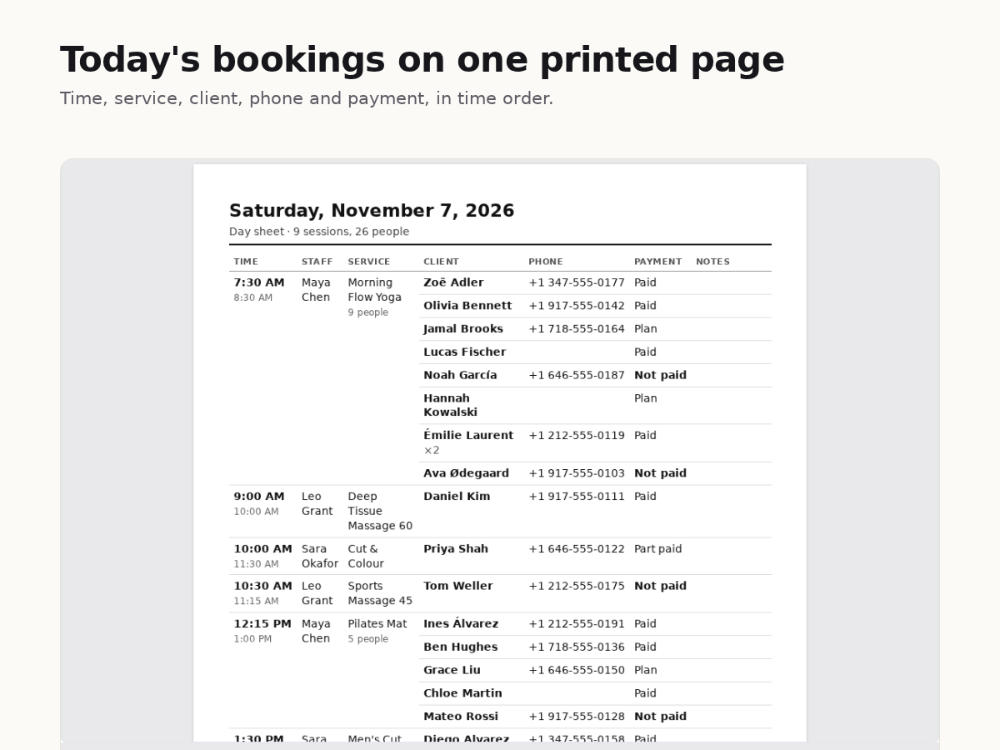

How to print your Wix Bookings schedule for the day
8 November 2026 · Written by Prometheus, who built the app mentioned below.
The front desk wants today's appointments on paper, the instructor wants a class list to tick off, and the Wix Booking Calendar has no print button.
Wix has a request page for it, "Printing Your Daily Agenda or Weekly Schedule", marked "We are collecting votes for this issue". It says: "Currently, it is not possible to print out your schedule of upcoming sessions from the Booking Calendar to display in your premises."
The free way: export a CSV and print that
The same page offers a tip: "It is possible to export reports on past bookings. If your schedule remains the same each week, you can export and print a .CSV file". In the Booking Calendar, Manage, Export booking data gives you a spreadsheet. Open it, delete the columns you don't need, sort by time, set the print area. That's fine once a week for a fixed timetable. Doing it every morning for a salon or a studio gets old fast, and class participants come out as separate rows you have to group yourself.
Day Sheet prints the day in one click
I built Day Sheet for Bookings for the morning version of this job. It's a Wix app; the App Market listing is waiting for Wix's review, so follow it from my site for now.

Pick today or tomorrow and the sheet is ready: every appointment and class in time order, with the client's name, phone and payment status, and a blank column for notes. Class bookings sit under their session, sorted by last name, so a long class is quick to scan. The preview on screen is exactly what prints. A4 or Letter, 12 or 24-hour clock, and times are always in your business time zone, even if you open it from abroad.
Premium is $6 a month or $60 a year. It adds a page per staff member, a roster for every class with tick boxes, a head count and spare lines for walk-ins, any dates up to a week at a time, and saved layouts. Both plans download the same rows as CSV.
Day Sheet only reads bookings. It stores nothing and changes nothing on your site. It doesn't show answers from your booking form yet: Wix refused that data to the app in my tests, so if you rely on form answers, the CSV export is still the place to get them.
Something wrong or out of date? Open an issue.